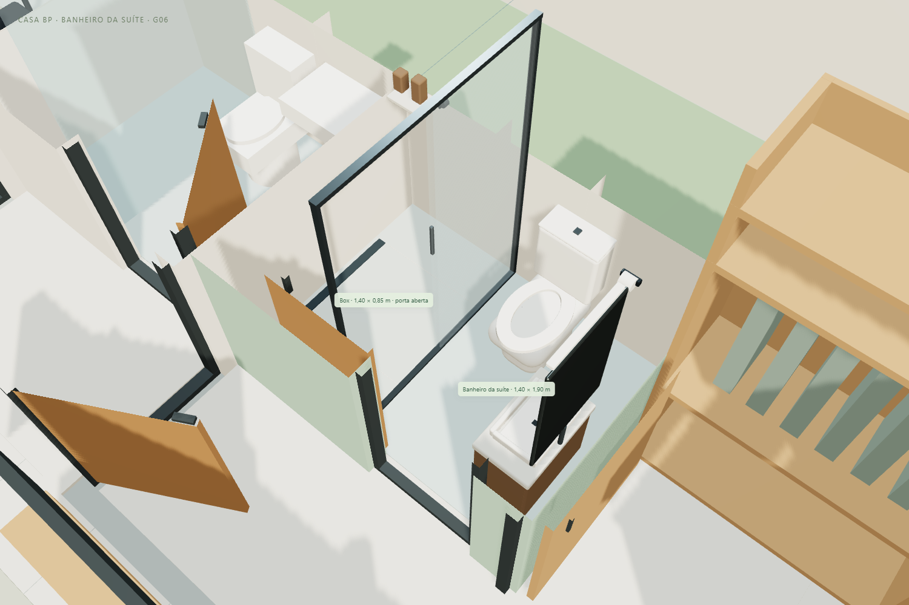
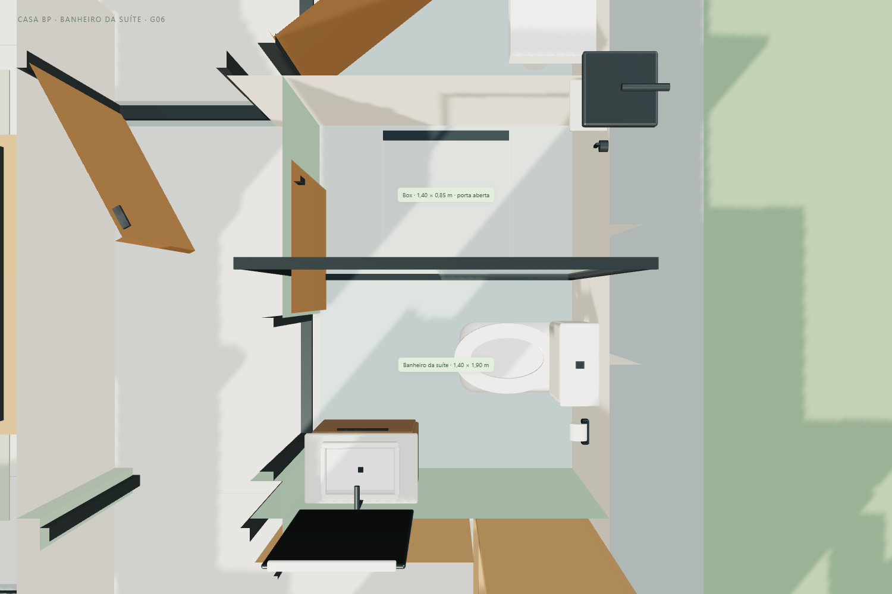

CASA BP · G06 · 11/11/2026
A placa branca que aparecia dentro do box não era uma divisória proposta. Eram quatro portas de um armário antigo que permaneceram indevidamente no modelo após a retirada do corpo desse armário. Elas atravessavam a área de banho e escondiam o chuveiro. A revisão G06 remove esses quatro elementos e refaz o conjunto do banheiro.
Abrir banheiro em 3D · Tour atualizado · Modelo GLB G06

| Elemento | Medida nominal no modelo |
|---|---|
| Banheiro completo | 1,40 × 1,90 m internos; 2,66 m² |
| Box | 1,40 × 0,85 m, incluindo a faixa entre paredes |
| Abertura representada do box | Cerca de 0,63 m à esquerda; duas folhas de vidro sobrepostas à direita |
| Gabinete suspenso | 0,50 × 0,30 m; tampo de 0,52 × 0,32 m |
| Vaso sanitário | Projeção de aproximadamente 0,66 m; largura de 0,38 m |
| Assento | Aproximadamente 0,44 m do piso, com forma oval e abertura |
| Espelho | 0,50 × 0,78 m |
| Porta do banheiro | Vão nominal existente de 0,70 m, com folha de correr aberta; marcos reduzem a abertura útil |
O lavatório raso fica na parede frontal, à esquerda, permitindo aproximar-se dele sem ocupar a área do vaso. O vaso fica junto à lateral direita; o box ocupa o fundo inteiro. Foram incluídos cuba vazada, torneira, espelho, chuveiro, registro, ralo linear, prateleira e acessórios. A cuba tem cerca de 0,35 × 0,26 m externamente; o conjunto é propositalmente compacto para liberar a entrada.

A área não aumentou: a correção recupera a leitura e o uso do espaço que estava ocupado por elementos incorretos no arquivo. O banheiro continua compacto. As medidas são referências do estudo; conferir louças e ferragens reais, folgas de uso, instalações, impermeabilização e medidas no local antes de executar. O tour usa um corpo simplificado de 0,40 m de largura e não valida acessibilidade.
As paredes e os vãos existentes no estudo foram preservados, assim como o banheiro social, o closet, o dormitório do casal, o escritório, a copa para seis, a cozinha, a garagem e a frente. Não se propõe demolir uma parede real para retirar a placa branca: ela era um erro de mobiliário no arquivo 3D.
Os botões Banheiro da suíte e Banheiro · vista de cima permitem conferir a proporção. O tour mantém 16 paradas e passa agora pelo interior desse banheiro. O caminho até o box também foi conferido geometricamente com a porta representada aberta.
Escritório e café G05 · Copa e cozinha G04 · Frente e acessos G03 · Carro “2024 BYD Seal”, Ddiaz Design, adaptado sob CC BY-NC-SA 4.0.